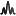
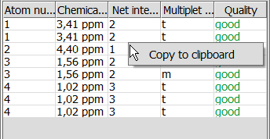
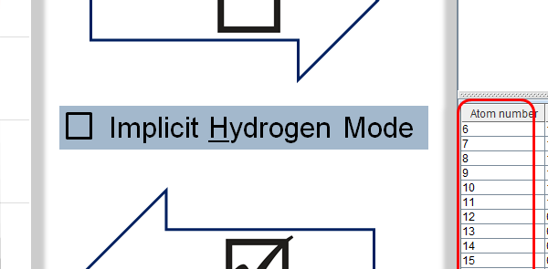
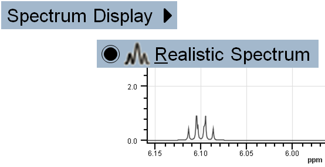
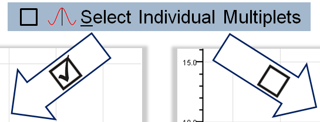

NMR Prediction - Tool to predict 13C and 1H Nuclear Magnetic Resonance spectra
NMR Prediction - 13C and 1H NMR predictor
NMR Prediction is integrated into MarvinSketch and is able to predict carbon-13 and hydrogen-1 nuclear magnetic resonance (13C NMR and 1H NMR) spectra for standard organic molecules drawn in MarvinSketch. Chemical shifts are estimated by a linear model based on a topological description scheme, and they are relative to the chemical shift of tetramethylsilane (δ(TMS)=0 ppm). NMR Prediction provides the details of the predicted spectrum for browsing in separate panels.
NMR Prediction - Usage
You can predict 13C NMR and 1H NMR spectra of organic molecules drawn in MarvinSketch using the relevant prediction in Calculations menu.
- Draw molecule in MarvinSketch.
- Go to Calculations > NMR >
- CNMR Prediction to discover the predicted 13C NMR spectrum of the molecule, or
- HNMR Prediction to discover the predicted 1H NMR spectrum of the molecule.
- The predicted spectrum will open in CNMR Prediction window if you chose CNMR Prediction, and in HNMR Prediction window if you chose HNMR Prediction, respectively.
Note: You can predict both spectra of the molecule in question which will open in separate windows.

Both NMR Prediction windows consist of a menu, toolbar, and four panels. The name of the window is displayed at the top left corner. At the bottom left corner of the status bar general information on the NMR prediction is shown, i.e., nucleus, measurement unit, and prediction frequency; while at the bottom right corner the coordinates of mouse cursor position on the NMR Spectrum Display Panel are shown. We will discuss the menu elements and panels of both 13C and 1H NMR Prediction windows together. Differences will be marked by the appropriate icon ( : CNMR Prediction, : HNMR Prediction).
: CNMR Prediction, : HNMR Prediction).
Back to top
NMR Prediction Menu
The menu contains File, Edit, Options, View, and Help elements.
File menu
is to export spectra to various molfiles or JCAMP-DX file format, to import spectrum of JCAMP-DX file format and superimpose it on predicted NMR spectrum, to remove the imported spectrum, and to close NMR Prediction.
Edit menu
is to copy specific panel to clipboard and to update the molecule from MarvinSketch. You can also apply the right-click of your mouse on the proper panel to copy it to the clipboard.
- Edit > Copy Spectrum: Copies the actual view of Spectrum Display Panel to the clipboard.
- Edit > Copy Spectrum Preview: Copies the actual view of Spectrum Preview Panel to the clipboard.
- Edit > Copy Molecule: Copies the actual view of Molecule View Panel to the clipboard.
- Edit > Copy Multiplet Table: Copies Multiple Table to the clipboard.
- Edit > Copy Atom Table: Copies Atom Table to the clipboard.
- Edit > Copy Coupling Table: Copies Coupling Table to the clipboard.
- Edit > Update Molecule: Updates molecule on Molecule View Panel and the whole prediction at the same time. You can switch back to MarvinSketch window without closing NMR predictor window; modify the molecule or draw a new molecule of which NMR spectrum you wish to predict. Switch back to NMR predictor window and either select Update Molecule or click on the Update button on Molecule View Panel to refresh NMR prediction.
Options menu
is to select optional NMR prediction settings:
- Options > Proton Coupling: Prediction considers spin-spin coupling; the result is splitting of signals into multiplets according to the interaction between two nuclei.
- Options > Implicit Hydrogen Mode: Hydrogens are displayed only on hetero and terminal atoms.
Note If you switch off this mode:
- all hydrogens will be visible on Molecule Panel;
- atoms will be re-numbered on all corresponding panels;
- coupling table will be filled in with relevant data.
- Options > NMR Prediction Frequency: Sets the frequency of the NMR prediction. Select prediction frequency from the predetermined list. Prediction frequency influences the fine structure of the spectrum.
- Options > Add Solvent Peaks...: Adds NMR signal(s) of selected common organic solvent(s) to the predicted spectrum. Select solvents from the predetermined list and click OK. The signal(s) of selcted solvent(s) will be added to the predicted spectrum. When spectrum labels are displayed, you can see the name of the solvent attached to the corresponding signal. We used the NMR shift data of common organic solvents in CDCl3 collected by Gottlieb et al.
- Options > Reset Default Settings: Resets zoom and the default Options, Color, and View settings of NMR predictor.
- CNMR Predictor:
- NMR Prediction Frequency: 500 [125] MHz
- Spectrum Display: Realistic Spectrum
- Spectrum Labels: Chemical Shifts
- Measurement Unit: ppm
- Zoom Follows Selection: On
- HNMR Predictor:
- Proton Coupling: On
- Implicit Hydrogen Mode: On
- NMR Prediction Frequency: 500 MHz
- Spectrum Display: Realistic Spectrum
- Spectrum Labels: Chemical Shifts
- Measurement Unit: ppm
- Integral Curve: On
- Zoom Follows Selection: On
View menu
is to select different display options related to the predicted spectrum and the molecule structure:
- View > Spectrum Display:
-  Realistic Spectrum: Displays predicted spectrum in a realistic way.
- Line Spectrum: Predicted chemical shifts are presented by distinct lines with proper intensity.
- View > Spectrum Labels: In order to assign signals and relevant atoms more easily, you can display the atom numbers or the chemical shift values of each signal on the NMR Spectrum Display an Molecule View Panels. Select:
- Atom Numbers to see atoms assigned to each signal and to display atom numbers on Molecule View Panel as well.
 Chemical Shifts to see the exact chemical shift value of NMR signals on NMR Spectrum Display Panel.
Chemical Shifts to see the exact chemical shift value of NMR signals on NMR Spectrum Display Panel.- None to remove spectrum labels.
Note that you can display only one type of label at a time.
- View > Measurement Unit: The chemical shift of tetramethylsilane (TMS) is set to zero, and all other chemical shifts are predicted relative to it. Display unit can be:
- View >
 Integral Curve: Displays integral curve on spectrum. Default setting is: on.
Integral Curve: Displays integral curve on spectrum. Default setting is: on.
- View > Display Legend: Displays legend on Spectrum Display Panel. The legend contains information on different functions of Spectrum Display Panel.
- View > Reference Spectrum: It is an imported JCAMP-DX NMR spectrum that can be superimposed on the predicted NMR spectrum.
- Display Shifts: If the imported JCAMP-DX file has "PEAKTABLE" property, the chemical shifts of the imported spectrum can be displayed.
- None: Remove chemical shift labels of the reference spectrum.
- View > Set Colors...: You can customize the color of the predicted spectrum, reference spectrum, and selection.
- View > Zoom Follows Selection: If you select an exact atom on Molecule View Panel, or a signal on NMR Spectrum Display Panel, the appropriate signal is centered and zoomed in on NMR Spectrum Display Panel.
- View > Select Individual Multiplets: In case of overlapping multiplets, this option enables highlighting individual multiplets.
- View > Horizontal Zoom In: Zooms in on spectrum in X-axis direction.
- View >
 Horizontal Zoom Out: Zooms out of spectrum in X-axis direction.
Horizontal Zoom Out: Zooms out of spectrum in X-axis direction.
- View >
 Vertical Zoom In: Zooms in on spectrum in Y-axis direction. Note: the bottom of the selection window is fixed.
Vertical Zoom In: Zooms in on spectrum in Y-axis direction. Note: the bottom of the selection window is fixed.
- View >
 Vertical Zoom Out: Zooms out of spectrum in Y-axis direction. Note: the bottom of the selection window is fixed.
Vertical Zoom Out: Zooms out of spectrum in Y-axis direction. Note: the bottom of the selection window is fixed.
- View > Reset Zoom: Displays the whole spectrum in both directions.
- View > Scale Up Reference: Increases intensity of imported reference spectrum. Active when reference spectum is imported.
- View > Scale Down Reference: Decreases intensity of imported reference spectrum. Active when reference spectum is imported.
Help menu
Back to top
NMR Predicton Toolbar
You can use toolbar elements to access selected NMR Predictor menu items.
 |
 |
Export to PDF... |
|
Spectrum Display |
|
Spectrum Labels |
|
Proton Coupling |
|
Integral Curve |
 |
Measurement Unit |
|
Zoom Follows Selection |
|
Select Individual Multiplets |
|
Horizontal Zoom In |
|
Horizontal Zoom Out |
|
Vertical Zoom In |
|
Vertical Zoom Out |
|
Reset Zoom |
|
Scale Up Reference |
|
Scale Down Reference |
|
Quick Help |
Back to top
NMR Prediction Panels
NMR Prediction window contains Molecule View Panel, Table of Chemical Shifts, NMR Spectrum Preview Panel, and NMR Spectrum Display Panel to present the predicted spectrum and to display selected features. Panels can be copied separately as images by right-clicking on the appropriate panel and selecting Copy to clipboard action.
Molecule View Panel
Displays the molecule of prediction. Molecule has to be drawn in MarvinSketch.
If you select View > Spectrum Labels > Atom Numbers, atom numbers will appear on both Molecule View Panel and NMR Spectrum Display Panel.
If you select View > Spectrum Labels > Chemical Shifts, chemical shift values of predicted multiplets will appear on both Molecule View Panel and NMR Spectrum Display Panel
Effect of Update button on Molecule View Panel is equal to Edit > Update Molecule action. Click on Update button after you have made any modifications on molecular structure in MarvinSketch and you want to predict the NMR spectrum of the new molecule.
Table of Chemical Shifts
The following tabs are available on this panel: Multiplet information, Atom information, and Coupling information tabs. Table on all tabs contains data of the predicted spectrum in Multiplet or Atom point of view. Coupling table contains the calculated coupling constants when Proton coupling option is selected.
Multiplet information
Table has six columns, namely: Atom numbers, Chemical shift, Net intensity, Intensity pattern, Multiplet information, and Quality. You can sort data according to these columns.
- Atom numbers are the numbers displayed on the molecule structure and are assigned automatically.
- Chemical shift values are displayed in the selected Measurement Unit.
- Net intensity is the integration value of the relevant signal.
- Intensity pattern describes the relative intensity of the multiplet elements.
- Multiplet information is the conventional one letter abbreviation of multiplicity, e.g.: s - singlet; d - doublet; t - triplet; ...
- Quality defines the prediction quality according to our validation method. Definitions: good, medium, rough.
Atom information
Table has five columns, namely: Atom number, Chemical shift, Net intensity, Multiplet information, and Quality.
- Atom numbers are the numbers displayed on the molecule structure and are assigned automatically.
- Chemical shift values are displayed in the selected Measurement Unit.
- Net intensity is the integration value of the relevant signal.
- Multiplet information is the conventional one letter abbreviation of multiplicity, e.g.: s - singlet; d - doublet; t - triplet; ...
- Quality defines the prediction quality according to our validation method. Definitions: good, medium, rough.
Coupling information
Table has four columns, namely: Atom 1, Atom 2, Value, and Quality.
- Atom 1 and Atom 2 are the number of atoms that the coupling constant is connected to.
- The value of the coupling constant is displayed in Hz.
- Quality defines the prediction quality according to our validation method. Definitions: good, medium, rough.
NMR Spectrum Preview Panel
Displays the whole predicted spectrum. You can zoom in and out on spectrum by using your mouse, toolbar zoom items, or menuitems.
- If you want to zoom in on specific region of the spectrum, use left-click and drag on NMR Spectrum Preview Panel. The background of the selected region will turn to white, while unselected region of the spectrum will turn to grey.
- You can move the selection window by left-clicking into the middle of the selection window; hold mouse button while moving the selection, and release button to place it.
- You can resize the selection window if you grab-and-drag its yellow side frames (except bottom frame).
NMR Spectrum Display Panel
Displays the appropriate zoom region of the spectrum.
Move your mouse pointer over the NMR Spectrum Display Panel and use mouse-wheel to zoom in and out on NMR spectrum along the X-axis. Using Ctrl+mouse-wheel will zoom in and out on NMR spectrum along the Y-axis.
Back to top
NMR Prediction Pop-up Menu

Right-clicking on any panel pops up a menu with the following element:
- Copy to clipboard: The panel in question will be copied to the clipboard.
Back to top
Examples
Toggle Proton Coupling: Options > Proton Coupling

Toggle Implicit Hydrogen Mode: Options > Implicit Hydrogen Mode
Change default setting to: View > Spectrum Labels > Atom Numbers; Zoom in on the certain spectrum region.

Switch between Realistic and Line Spectrum display: View > Spectrum Display >

Select Individual Multiplets:

References
Gottlieb, H.E.; Kotlyar, V.; Nudelman, A. J. Org. Chem., 1997, 62, 7612-7515; doi
Back to top
Copyright© 2011-2012 ChemAxon Ltd.
All rights reserved.

{kind=link}
{kind=link}
{kind=link}